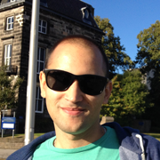

<!-- <nav id="navbar">
	<div class="nav" >
		<ul class="nav">
			<li><a href="#about" class="scroll">1</a></li>
			<li><a href="#publications" class="scroll">2</a></li>
			<li><a href="#posters" class="scroll">3</a></li>
			<li><a href="#talks" class="scroll">4</a></li>
			<li><a href="#projects" class="scroll">5</a></li> -->
			<!-- <li><a href="index.html#timeline" class="scroll">6</a></li>
		</ul>
	</div>
</nav> -->
<!-- About Section -->
 <section id="about">
  <div class="container">
  </br></br></br></br>
	  
	  <h3>I'm <strong>Fábio Madeira</strong>, a PhD student in Computational Biology.</h3>
	  <h3>I do <a href="#publications" class="scroll">research</a> in the <a href="http://www.compbio.dundee.ac.uk/">Barton group</a> at the University of Dundee, Scotland.</h3>
	  <h3>I share my posters + talks on <a href="http://figshare.com/authors/F%C3%A1bio%20Madeira/512293">figshare</a> and code on <a href="http://github.com/biomadeira">GitHub</a>.</h3>
	  <h3>Have a look at some of my ongoing <a href="#projects" class="scroll">projects</a> below.</h3>
	  <h3>For more information check my <a href="/resume" class="scroll">Resume</a>.</h3>
	  <h3>Contact me at <a href="http://twitter.com/biomadeira">@biomadeira</a> or send an <a href="mailto:fabiomadeira@me.com">email</a>.</h3>
	  </br></br>
		{% include social_links.html %}
	  <a href="index.html#research" class="scroll"><span class="down-arrow"></span></a>
  </div><!-- /.container -->
</section>

{% include projects.html %}

{% include publications.html %}

{% include education.html %}

</br></br>